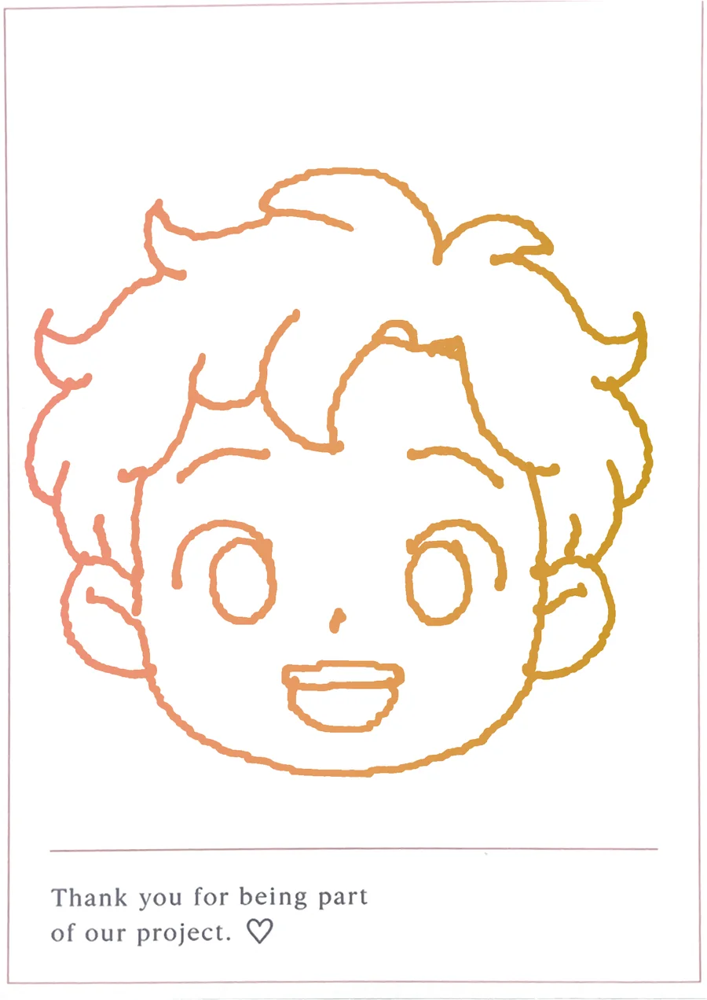
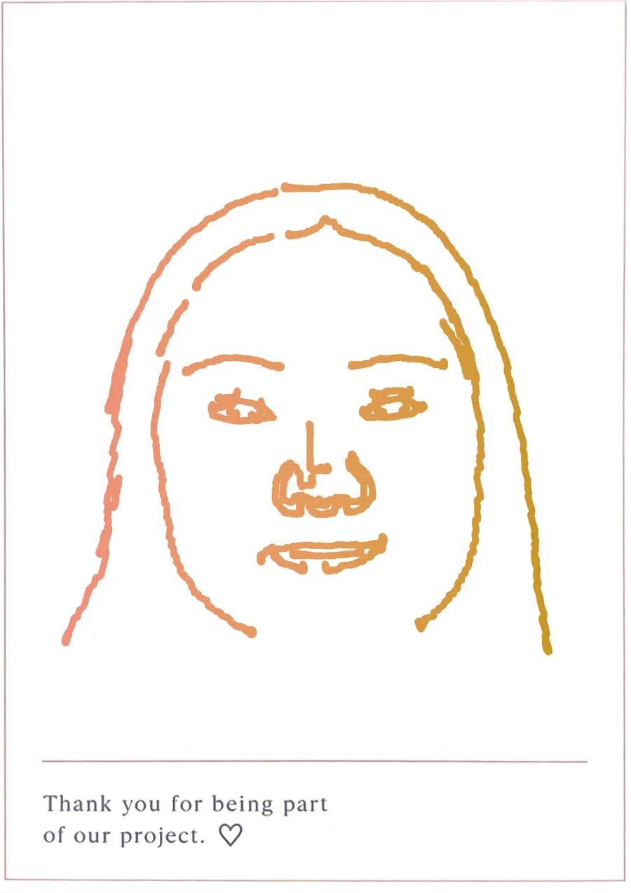

Capstone Project
Real-Time Robotic Portrait Drawing System
Your face. Drawn live.
Sit for a photo. Watch technology turn your expression into a one-of-a-kind line portrait.
Scroll to watch it drawMeet the artist.
A 3-DOF robotic arm, printed in pink.
One line at a time.
A real pen follows the plotted path.
Every stroke, planned.
The drawing becomes a path before the pen ever touches the paper.
Say cheese.
The same path our robot drew on paper. A photo in, a one-of-a-kind drawing out.
Watch the film.
One minute, from the ring light to the take-home postcard.
Drawn live. Taken home.
Real postcards from our demo, drawn by the arm. The first is the one you watched above.



System Pipeline
From photo to physical artwork.
Imagine taking a photo and watching a robot turn it into a drawing right in front of you. Our system transforms digital images into sketch paths, then guides a robotic arm to recreate the portrait on paper as a unique physical artwork.
- 01
Photo capture
Step up to the camera. A ring light and camera take a clear portrait in real time.
- 02
Image processing
The photo is cleaned up and adjusted so your features stand out.
- 03
Sketch conversion
Your face becomes a clean line sketch, keeping only the lines that matter.
- 04
Drawing path
The sketch becomes ordered pen strokes: every point to visit, pen down or pen up.
- 05
Robot planning
Each point becomes motion for the arm, timed to ease in and out of every stroke.
- 06
Control
The controller sends the plan to the motors, one move at a time.
- 07
Robot drawing
A real pen draws your portrait on a postcard you take home.
Your portrait. Your vote.
Support our project: tap the button or scan the QR code to vote.

Scan to vote for us
B99: Real-Time Robotic Portrait Drawing System